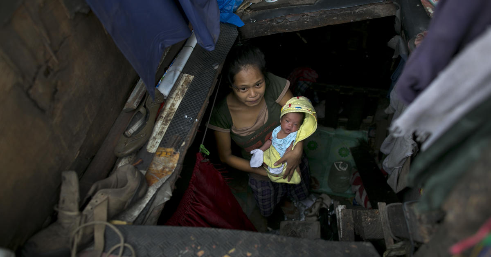
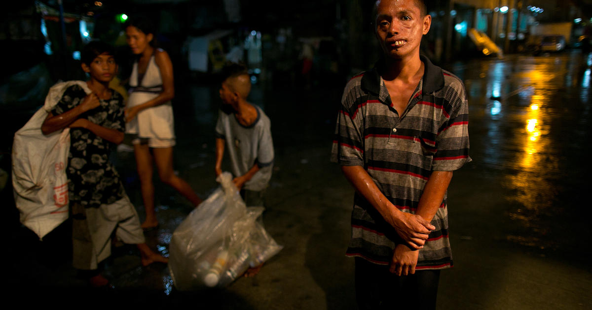
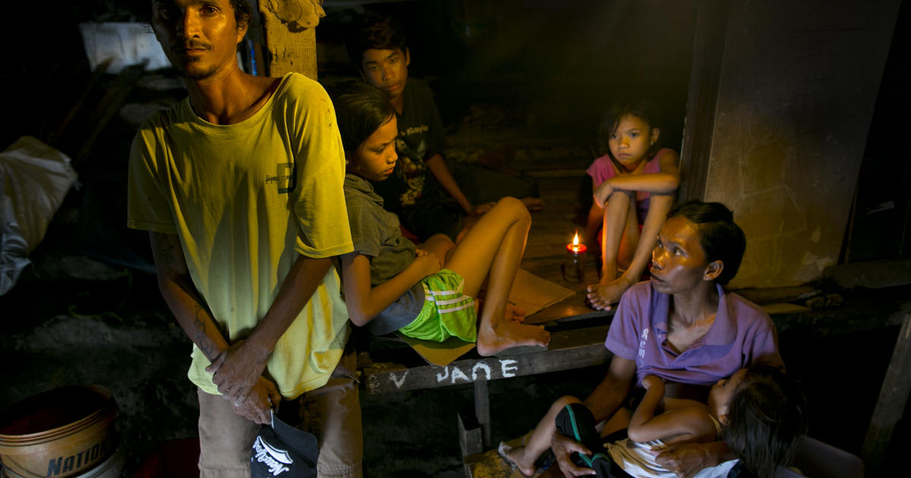
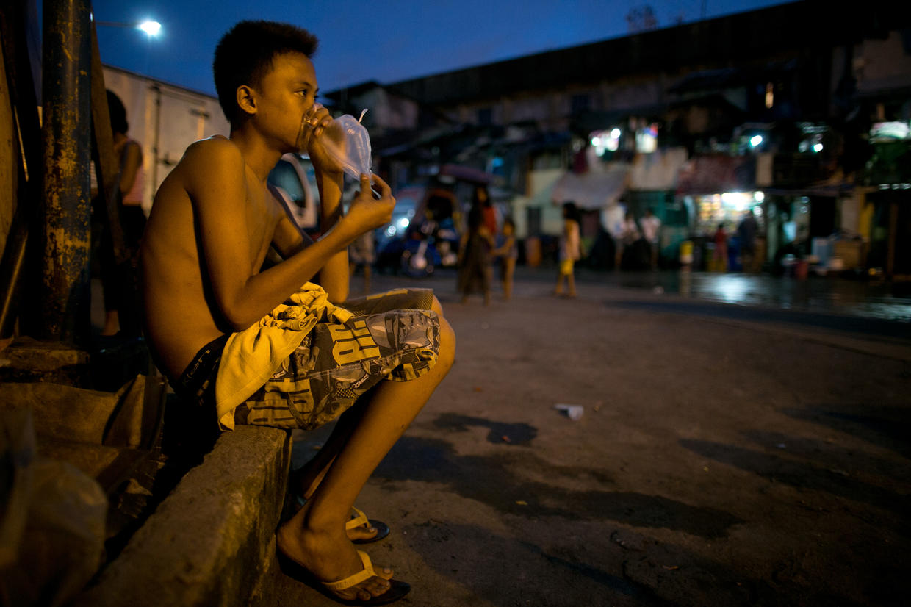
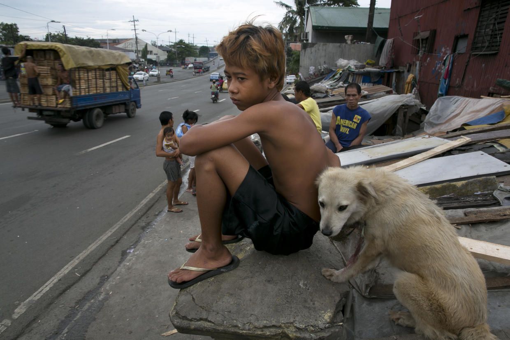

Irish Romes, 19, holds her newborn baby Jay,
2 weeks old, inside a small space where she lives with her family next to a highway in the slums of Binondo on Aug. 21, 2012 in Manila, Philippines.

Jasper Vito, 22, stands on the streets of the Binondo slums as young boys carry bags of recycled items they collectedon Aug. 21, 2012 in Manila, Philippines.

John Harris stands next to his family, wife Remedios holding Joshua, 3, Jamie, 11, John, 16, and Joyce, 8, at their small space where they live under a bridge on Aug. 21, 2012 in Manila, Philippines.

Young boy inhales glue mixed with nail polish remover in a plastic bag living in the slums of Binondo on Aug. 21, 2012 in Manila, Philippines.

Young man looks out at the highway sitting along side his dog in a congested slum on Aug. 21, 2012 in Manila, Philippines. Manila has a population of 20 million people which is rising by approximately another quarter of a million every year. Due to overcrowding a third of the city dwellers are forced to live on any bit of spare land they can manage mostly in makeshift settlements under bridges, railway lines and even cemeteries. Large families are a common statistic in a conservative Catholic county that is pushing the government's already weak social care system to it's limit.